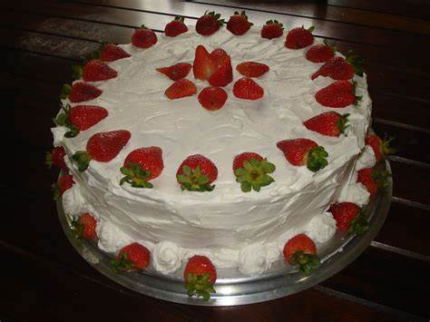

RECEITAS DO CHELÃO
o brabo de BH
BOLO DE MORANGO

Ingredientes:
- 3 ovos
- 1 xícara de açúcar
- 1/2 xícara de óleo
- 1 xícara de leite
- 2 xícaras de farinha de trigo
- 1 colher de sopa de fermento em pó
- 1 caixa de morangos
Modo de preparo:
- Preaqueça o forno a 180°C.
- Bata os ovos e o açúcar na batedeira até obter um creme.
- Adicione o óleo e o leite e misture bem.
- Misture a farinha de trigo e o fermento em pó em uma tigela.
- Adicione a mistura líquida à tigela com os ingredientes secos e misture bem.
- Corte os morangos em pedaços pequenos e adicione à massa.
- Despeje a massa em uma forma untada e leve ao forno por cerca de 40 minutos.
.
michelmaike©®